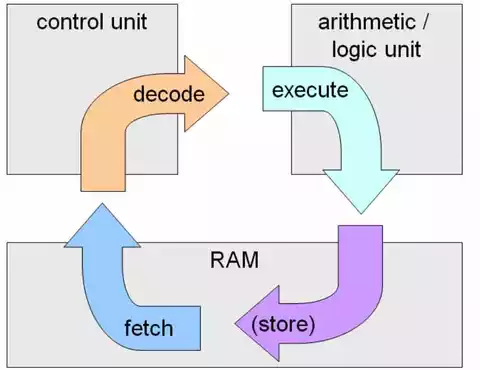

Organización del Procesador
Se refiere a cómo están diseñados y conectados los componentes internos del procesador para
ejecutar instrucciones. Se enfoca en la estructura funcional y la interrelación de las distintas
partes del procesador, incluyendo:
- Unidad de Control (CU): Dirige la operación de los otros componentes del procesador.
- Unidad Aritmético-Lógica (ALU):Realiza operaciones matemáticas y lógicas.
- Registros:Pequeños espacios de almacenamiento dentro del procesador para guardar datos temporales durante las operaciones.
- Buses:Canales que transportan datos e instrucciones entre diferentes partes del procesador y otros componentes del sistema.
- Caché:Memoria pequeña y rápida que almacena datos de uso frecuente para reducir el tiempo de acceso a la memoria principal.
Índice
Estructuras de Registros
Registros del CPU:
Se emplean para controlar las instrucciones en ejecución, manejar direccionamiento de memoria y propiciar la capacidad aritmética.
Los registros vienen de tres tipos: datos, direcciones e índice, que tiene lugar en casi todos los aspectos de la operación del CPU.
El tamaño de un registro depende del CPU; los más simples tienen registros que aceptan 8 o 16 bits de datos y los más complejos tienen
registros de 32, 48 o 64 bits.
Registros visibles para los usuarios
Son aquellos que los programadores pueden utilizar directamente a través de instrucciones del conjunto de instrucciones
del procesador. Estos registros están diseñados para ser manipulados explícitamente en los programas de software y forman
una interfaz crucial entre el hardware del procesador y el software. Algunos de sus tipos son:

- De propósito general: Son utilizados para almacenar temporalmente datos durante la ejecución de un programa.
Sirven para realizar operaciones matemáticas, lógicas o de manipulación de datos y también pueden guardar direcciones de memoria.
- De propósito especial: Utilizados para propósitos específicos en ciertos contextos. Un ejemplo son los registros de índice y puntero.
- Contador de programa: Aunque generalmente no es accesible directamente por el usuario en algunas arquitecturas, es un registro importante
que contiene la dirección de la próxima instrucción a ser ejecutada.
- Registros de bandera o estado: Estos registros no almacenan datos de usuario, pero sí son visibles para el programador
porque indican el resultado de las operaciones y pueden influir en decisiones dentro de un programa.
- Registros de segmento: En arquitecturas como la x86, se usan para gestionar la segmentación de la memoria:
- CS (Code Segment): Contiene la dirección del segmento donde reside el código ejecutable.
- DS (Data Segment): Contiene la dirección base del segmento de datos.
- SS (Stack Segment): Contiene la dirección base del segmento de pila.
- Registros flotantesEn procesadores con FPU (Unidad de Punto Flotante), existen registros dedicados a realizar operaciones
matemáticas de punto flotante (decimales de alta precisión), visibles para el programador
Registros de control y estado
- Registros de Estado:Estos registros contienen indicadores que reflejan los resultados de las operaciones
aritméticas y lógicas, y se utilizan para el control del flujo de un programa. En particular, las banderas
permiten realizar decisiones condicionales y controlar saltos en el código. Principales banderas de estado:
- Zero Flag (ZF): Se establece cuando el resultado de una operación es igual a cero. Esto es útil para saltos condicionales en bucles.
- Sign Flag (SF): Indica si el resultado de una operación es negativo. Se activa si el bit más significativo de una operación es 1.
- Carry Flag (CF): Se activa cuando una operación aritmética genera un acarreo o desbordamiento en operaciones de suma o resta.
- Overflow Flag (OF): Indica si se produjo un desbordamiento aritmético en operaciones con números con signo.
- Parity Flag (PF): Indica si el número de bits con valor 1 en el resultado es par.
- Auxiliary Carry Flag (AF): Se utiliza para indicar acarreo entre los bits de menor peso (nibbles) en operaciones aritméticas, común en
operaciones de ajuste en cálculos BCD (decimal codificado en binario).
- Registros de Control:permiten configurar y modificar el comportamiento del procesador, controlando características como
la protección de memoria, el modo de operación del CPU (real o protegido), y la configuración de la memoria caché. Estos
registros no suelen ser accesibles directamente en lenguajes de alto nivel y son manipulados principalmente en código
ensamblador o a través del sistema operativo. Principales registros de control:
- CR0: Registro de control principal en la arquitectura x86. Contiene banderas que controlan diversas características del procesador,
como:
- PE (Protection Enable): Habilita o deshabilita el modo protegido.
- MP (Monitor Coprocessor): Controla el uso de la FPU (unidad de punto flotante).
- EM (Emulation): Indica si las instrucciones de la FPU están emuladas por software.
- PG (Paging): Habilita la paginación, un mecanismo de traducción de direcciones de memoria.
- CR2: Contiene la dirección de la memoria que causó una falla de página (page fault), lo que es útil para el manejo de
excepciones de memoria.
- CR3: Almacena la dirección base del directorio de páginas utilizado para la paginación. Es crucial en la traducción de direcciones
virtuales a direcciones físicas en sistemas que usan memoria virtual.
- CR4: Controla características adicionales de la CPU, como la habilitación de extensiones de instrucciones (por ejemplo, SSE, PAE),
la protección de escritura, y el control de depuración.
 Índice
Índice
El Ciclo de Instrucciones
Es el proceso que sigue un procesador para ejecutar una instrucción de un programa. Es un ciclo que consta de una serie de etapas
bien definidas que se repiten continuamente para procesar cada instrucción en el orden que el programa las establece. Este ciclo
es fundamental en la arquitectura de cualquier procesador
Ciclo Fetch-Decode,Execute
El ciclo Fetch, Decode, Execute es el proceso fundamental que sigue el procesador para ejecutar cada instrucción de un programa.
Estas tres etapas básicas son repetidas continuamente para procesar cada instrucción en el orden que indica el código del programa.
Aquí se explica cada etapa con más detalle:

- FETCH (Búsqueda).
En esta fase, el procesador localiza y obtiene la próxima instrucción que debe ejecutarse desde la memoria principal.
El Contador de Programa (PC, Program Counter) contiene la dirección de la siguiente instrucción a ejecutar, la cual se
encuentra almacenada en la memoria. Pasos importantes en esta etapa:
- El procesador envía la dirección contenida en el PC a la memoria para obtener la instrucción.
- La instrucción se transfiere desde la memoria al Registro de Instrucción (IR, Instruction Register).
- El PC se incrementa para apuntar a la dirección de la siguiente instrucción.
- DECODE (Decodificación).
Una vez que la instrucción ha sido cargada en el IR, el procesador debe interpretarla para determinar qué operación debe
realizar y qué operandos se necesitan. En esta etapa, la Unidad de Control del procesador analiza la instrucción.
Pasos importantes en esta etapa:
- La Unidad de Control decodifica la instrucción, identificando la operación que debe realizarse (por ejemplo, suma,
carga de datos, salto, etc.).
- La unidad también determina qué operandos serán necesarios. Estos operandos pueden estar almacenados en registros o en la memoria.
- Si la instrucción involucra una operación aritmética, lógica o de manipulación de datos, el procesador prepara la Unidad Aritmético-Lógica
(ALU) para realizar la operación.
- EXECUTE (Ejecución).
En la etapa de ejecución, el procesador realiza la operación especificada por la instrucción decodificada. La operación puede
involucrar cálculos aritméticos, comparaciones lógicas, transferencia de datos, o control del flujo del programa (por ejemplo,
un salto o una bifurcación). Pasos importantes en esta etapa:
- Si es una operación aritmética o lógica, la ALU realiza la operación sobre los operandos.
- Si la instrucción es una transferencia de datos, los datos se copian entre registros y/o memoria.
- Si la instrucción es de control de flujo (como un salto o bifurcación), el PC se actualiza para saltar a una nueva
dirección en lugar de continuar con la siguiente instrucción secuencial.

Segmentación de instrucciones
La segmentación de instrucciones o pipelining es una técnica que permite mejorar el rendimiento de un procesador al dividir el
ciclo de instrucción en varias etapas (o segmentos) que pueden funcionar de manera simultánea. Esto significa que mientras una
instrucción está en una fase del ciclo, otra puede estar en una fase diferente, lo que permite que múltiples instrucciones se
procesen al mismo tiempo, en lugar de esperar a que una instrucción complete todas sus etapas antes de empezar la siguiente.
Ventajas de la segmentación
- Mayor rendimiento: Al permitir que varias instrucciones se procesen simultáneamente en diferentes etapas, se aumenta el rendimiento
del procesador sin aumentar su frecuencia de reloj.
- Eficiencia: Los recursos del procesador, como la ALU o los buses de datos, se usan de manera más eficiente ya que no están inactivos
entre instrucciones.
- Latencia reducida: Se reduce el tiempo de espera entre el inicio y el final de las instrucciones debido a la ejecución simultánea de
múltiples instrucciones.
Conjunto de instrucciones
El conjunto de instrucciones (ISA, por sus siglas en inglés: Instruction Set Architecture) es el conjunto completo de comandos o
instrucciones que un procesador puede ejecutar. Representa la interfaz entre el hardware y el software, ya que define las operaciones
que los programas pueden solicitar al hardware que realice. Cada procesador o familia de procesadores tiene un conjunto de instrucciones
específico, que incluye las operaciones disponibles y la manera en que se codifican.
Componentes del conjunto de instrucciones
- Tipos de instrucciones:
- Aritméticas y lógicas: Sumar, restar, multiplicar, dividir, AND, OR, NOT, XOR, etc.
- Control de flujo: Saltos condicionales, incondicionales, llamadas a subrutinas, retornos.
- Carga y almacenamiento (Load/Store): Mover datos entre registros y memoria.
- Manipulación de bits: Rotar, desplazar (shift), y operaciones a nivel de bits.
- Gestión del procesador: Instrucciones para controlar el estado del procesador, interrupciones, y manejo de excepciones.
- Formato de las instrucciones: Cada instrucción tiene un formato específico que incluye los siguientes elementos:
- Código de operación (opcode): Es la parte de la instrucción que indica qué operación se debe realizar.
- Operandos: Son los datos sobre los cuales se ejecuta la operación. Pueden ser registros, direcciones de memoria,
constantes inmediatas, etc.
- Modos de direccionamiento: Especifica cómo acceder a los operandos, ya sea de manera directa, indirecta,
mediante registros, etc.
- Modos de direccionamiento
- Directo: La instrucción contiene la dirección de memoria exacta del operando.
- Indirecto: La instrucción contiene una referencia a un registro o ubicación de memoria que almacena la dirección real del operando.
- Inmediato: El valor del operando está directamente en la instrucción.
- Indexado: La dirección del operando se obtiene sumando un valor constante a un registro de índice.
- Relativo: Se especifica un desplazamiento relativo a la posición actual del programa.
- Tamaño de las instrucciones: Las instrucciones pueden tener diferentes tamaños, dependiendo de la arquitectura:
- Longitud fija: Todas las instrucciones tienen el mismo tamaño, lo que simplifica el decodificador pero puede desperdiciar espacio si
se necesitan instrucciones más simples.
- Longitud variable: Las instrucciones pueden tener diferentes tamaños, permitiendo que instrucciones simples ocupen menos espacio y
complejas más, pero aumentando la complejidad del decodificador.
 Índice
Índice
Modos de Direccionamiento
Los modos de direccionamiento son las diversas maneras en que una instrucción de un procesador puede especificar la ubicación de
los operandos, ya sea en registros, en memoria o como valores inmediatos. Cada modo de direccionamiento indica cómo se debe acceder
a los datos que se necesitan para ejecutar una instrucción.
Aquí una breve explicación de los modos de direccionamiento más comunes:
- Modos inmediatos: El operando es parte de la instrucción.
- Modos de memoria (directo, indirecto): El operando se encuentra en una dirección de memoria especificada por la
instrucción o referenciada indirectamente.
- Modos de registro (directo, indirecto): El operando se encuentra en un registro o la dirección está almacenada en un registro.
- Modos indexados y relativos: Utilizan un registro base y un desplazamiento para calcular la dirección efectiva.
- Modo de pila: Usa una estructura de datos LIFO para gestionar operandos.
Índice